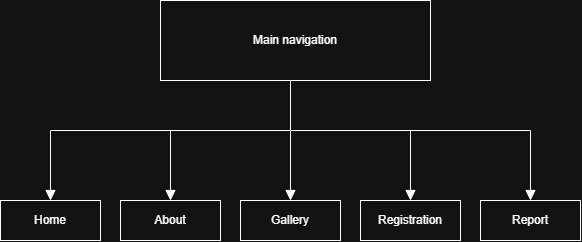

For this course project, I created a website for a fictional event called “Dance Kvartirnik.” The original idea actually came from a friend of mine who is a dancer. I wanted to create something that felt more like a real project and not just a school assignment. Something that I can modify after I learn more, and my friend can use my website to start doing events like that in Finland.
I created five pages: home, about, gallery, registration, and report. Before the course started, I had no even the slightest idea how you could make a working website. My favourite part of this project was the vinyl animation, with playable audio when you click it; I used SVG to draw it, CSS to make it rotate, and JavaScript to connect it to music. However, getting the audio to work was not as easy as I thought it would be. I spent quite some time trying to understand why the browser could not load the file, and with the browser console, I made it work, and I was very excited and very happy when it did work! So probably if I need to choose what I would like to receive extra points for, it is definitely the record. The other visual design was cool all the small details, colours, fonts. Sometimes I spent more time than I expected trying to make two elements look good together.
But the biggest challenge was making the website responsive. At first, everything looked fine on my laptop, but when I checked other screen sizes, some elements were suddenly in completely wrong places. Especially the overlapping images on the home page caused me problems. I had to change their positioning several times and use CSS media queries to make the layout work on desktop, tablet, and mobile screens. It was probably the most frustrating part of the project, but also one of the most useful things I learned.
Some tasks, like creating the basic HTML structure and adding text, were quite straightforward. On the other hand, working with responsive images, positioning, and JavaScript required much more patience. I also realised that even a small design change can sometimes create problems somewhere else on the page.
During the course, I learned much more than just HTML and CSS. I started to understand how different parts of a website work and what is behind every website. I worked on this project for approximately three days a week over three weeks. If I continued developing it, I would improve some of the responsive layouts and add more interactive features. Overall, I am happy with the result, especially the colour scheme and the vinyl record. The website is not perfect, but I like that it has its own atmosphere and that I managed to turn my original idea into something that actually works, and hopefully one day this website is going to be perfect.
Website Structure
All five pages are accessible from every page through the main navigation menu.
